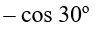

Question 1
What
is the vertex of f(x) = x
2
+ 4x + 2?
Select one:
(2,
2)
(–
2, – 2)
(–
2, 2)
(2, – 2)
None of these
Question 2
Solve the system (domain is all real numbers): y = x 2 + 5, y = x - 4
Select one:
(0, 5)
(0, -4)
(1, 6) and (1, -3)
No solution
None of these
Question 3
What is the equation of a line through (-1, 4) and (-2, 7)?
Select one:
y = 3x + 1
y = -3x + 1
y = -3x + 7
y = 3x + 7
None of these
Question 4

Answer
Question 5
Solve the system: x + y + z = 3, 2x – y + 3z = 3, x - 2y + 3z = 0
Select one:
(1, 1, 1)
(1, 2, 0)
(2, 1, 0)
No solution
None of these
Question 6
 = 2x^{2} - 16x + 4") What are the coordinates of the maximum or minimum point of this function?
What are the coordinates of the maximum or minimum point of this function?
Answer
Question 7
The removable discontinuities of the function
 = \frac{x - 10}{x^{2} - 12x + 20}") are:
are:
Answer
![g(x) = \sqrt[]{x}](./file04_files/05f05e9665fd4a505ddd2df11bb72e2f.png "g(x) = \sqrt[]{x}")

![5x^{9/2} + 10 \sqrt[]{x}](./file04_files/02a1bec39778f95dd8f32fdceb3dcbd2.png "5x^{9/2} + 10 \sqrt[]{x}")
![5x^{9/2} +5 \sqrt[]{x}](./file04_files/0426b1bde0e415140705eebc40a02457.png "5x^{9/2} +5 \sqrt[]{x}")
Question 9
Solve
for x: (1/3)
x
= 81
Select one:
4
–2
3
–4
None of these
Question 10
Solve for x: (1/2) x = 16
Select one:
-4
-2
2
4
None of these
Question 11
What is the exact value of sin (22.5 degrees)?
Select one:
.383
sqrt (2)
sqrt (2 – sqrt(2)) / 2
sqrt ((2 + sqrt (2)) / 4)
Impossible
Question 12
Question 13
 are:
are:
Answer
Question 14
Solve the system: 2x + 3y = 7, 3x - 5y = 1
Select one:
(2, 1)
(1, 2)
(0, 0)
There is no solution
None of these
Question 15
Solve the system: y = x 2 – 5, y = 2x - 2
Select one:
(3, -1)
(-1, 3)
(3, 4) and (-1, 2)
(-1, -4) and (3, 4)
None of these
Question 16
Answer




Question 17
Solve the system: x + y + z = 4, 3x – y + z = 2, y – z = -2
Select one:
(4, 0, 0)
(0, 2, 2)
(0, 1, 3)
There is no solution
None of these
Question 18
What
is the equation of the line passing through (1, –4) and parallel to y = –x + 1?
Select one:
–x
+ y + 3 = 0
x –
y + 3 = 0
x +
y – 3 = 0
x +
y + 3 = 0
None of these
Question 19
What
is the exact value of sin (15 degrees)?
Select one:
.380
sqrt
(2 – sqrt(3)) / 2
sqrt
(2 + sqrt (3)) / 2
.350
Impossible
Question 20

What does the above graph represent?
Answer
Question 21
What is the equation of the line passing through (-1, 4) and parallel to y = 2x + 1?
Select one:
y = 2x + 6
y = 2x + 1
y = 2x
No such line exists
None of these
Question 22
Question 23
The
graph of y = –2 sin (x – 2) + 1 has amplitude of:
Select one:
0
1
2
3
4
Question 24
Solve the system: 3x – 2y = 10, 5x + 3y = 23
Select one:
(0, -5)
(4, 1)
This system is dependent
No solution
None of these
Question 25
The graph of y = 4sin (3x + 2) + 1 has amplitude of:
Select one:
0
1
2
3
4
Question 26
What
are the possible rational roots of f(x) = 3x
4
– x
3
+ x
2
– x + 5?
Select one:
{±1, ±5}
{±1/3, ±5/3}
{±1, ±1/3, ±5, ±5/3}
{1,
1/5, 3, 3/5}
{1,
1/3, 5, 5/3}
Question 27
Solve the system: 2x – y = 4, x + y = 5
Select one:
x = 3
(2, 3)
(3, 2)
There is no solution
None of these
Question 28
Answer


Question 29
Solve the system: y = x
4
+ 1, y = x
2
+ 1
Select one:
(0, –1), (–1, 2), (1, –2)
(0, –1), (–1, 2), (1, 2)
(0, 1), (–1, 2), (1, 2)
No solution
None of these
Question 31
What is the exact value of sin (120 degrees)?
Select one:
½
.866
√3/2
-1/2
None of these
Question 32
Solve the system: y = e
3x
, and y = 1/e.
Select one:
(1/3, e)
(1/3, e
-1
)
(–1/3, e
-1
)
No solution
None of these
Question 33
On a circle of radius 4 and center (0, 0), find the x and y coordinates at angle 180 degrees (or π in radian measure).
Select one:
(0, 4)
(4, 0)
(4, 4)
(-4, 0)
(2, 2)
Question 34
Answer
Question 36
Answer
^{2} + 2")
^{2} +1")
Question 37
Solve the system: x + y + z = 6, 2x – y + z = 3, x + y – z = 0
Select one:
(0, 0, 6)
(3, 2, 1)
(0, 0, 1)
(1, 2, 3)
None of these
Question 38
Solve the system: x = y
2
+ 4y – 5, x = 0.
Select one:
(0, –5) and (1, 1)
(4, 4) and (–5, –5)
(0, 1) and (0, –5)
No solution
None of these
Question 39
Solve the system: y = |x|, y = 2|x| + 3.
Select one:
(–1, 1)
(1, 1)
(2, 2)
No solution
None of these
Question 40
What is the solution of 2x – y = 5, -8x + 4y = 2?
Select one:
(2, -1)
(-1, 2)
(0, -5)
There is no solution
None of these